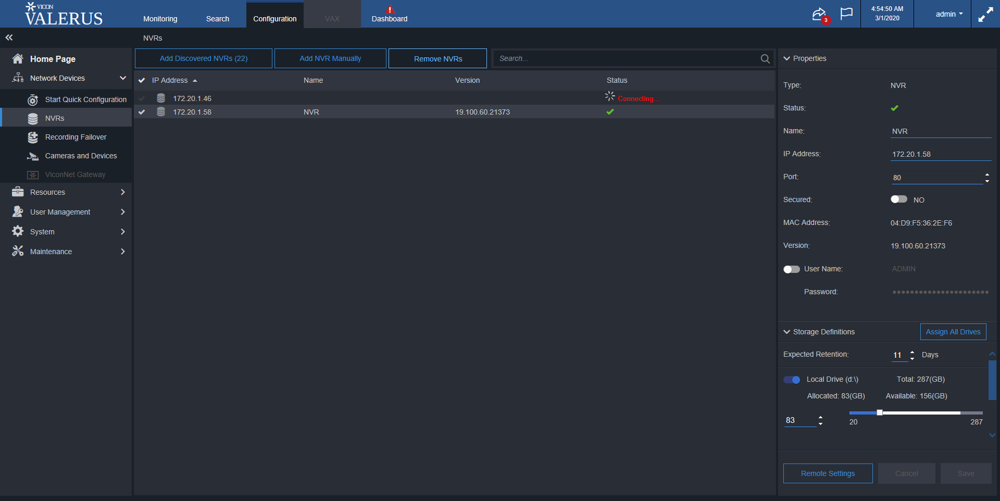
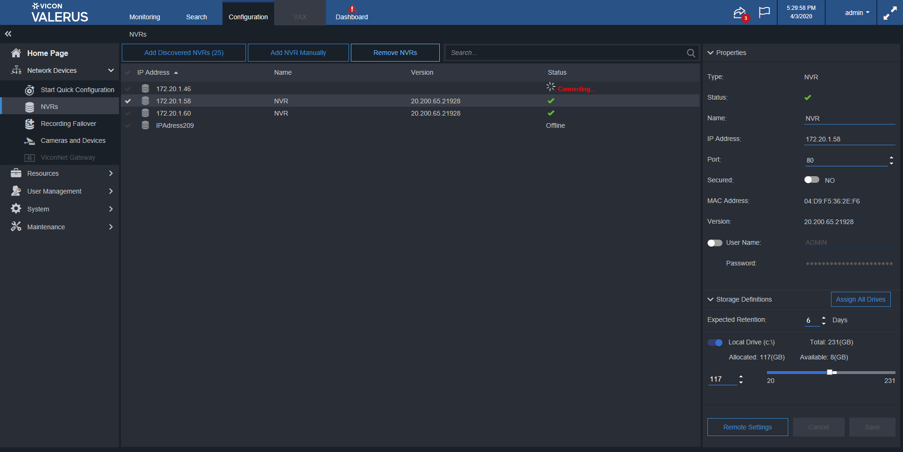
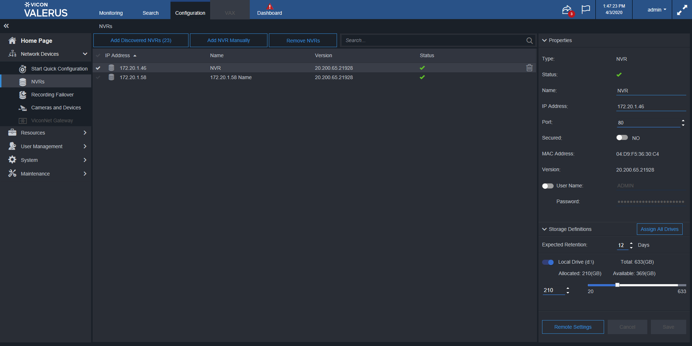

Total Tests
Total Steps
Total Time Taken (Current Run)
8h 38m 55s+967ms
Total Time Taken (Overall)
8h 38m 55s+967ms
Start
2020-02-05 19:27:52
End
2020-02-06 04:06:48
Pass Percentage
Environment
| Param | Value |
|---|---|
| User Name | popatb |
| OS | Windows 10 |
| Java Version | 1.8.0_202 |
| Host Name | BORSE-PC |
Tests
-
AddAlreadyUsedNVRManuallyTest pass2020-02-05 19:28:44 2020-02-05 19:29:01 0h 0m 16s+758ms
Status Timestamp Details 19:28:44 add NVR 172.20.1.42 if it isn't exists 19:28:45 Select NVR with Online status 19:28:46 Get a port from selected NVR 19:28:49 Open Add NVR Manually window 19:28:51 Input into IPAddress field 172.20.1.42 19:28:53 Input into port field 80 19:28:56 Input into UserName field ADMIN 19:28:57 Input into password field 1234 19:28:58 Apply NVR adding 19:28:59 Check that 'IP Address already exists in the system' notification appears 19:29:01 Confirm 'IP Address already exists in the system' notification 19:29:01 Cheking that NVR count after is equal to NVRs count before 19:29:01 Test is passed -
AddNVRAndCheckStatusVTest fail2020-02-05 19:32:37 2020-02-05 19:34:04 0h 1m 27s+149ms
Status Timestamp Details 19:32:37 Adding NVR 172.20.1.46 19:32:39 Delete NVR172.20.1.46 19:33:03 NVR172.20.1.46 is deleted 19:33:24 NVR172.20.1.46 is added 19:34:04 NVR 172.20.1.46 is added in the Centaral Panel list 19:34:04 java.lang.AssertionError: expected [V] but found [NVR cannot be synced. Its system unique id belongs to another NVR.] at org.testng.Assert.fail(Assert.java:97) at org.testng.Assert.assertEqualsImpl(Assert.java:136) at org.testng.Assert.assertEquals(Assert.java:118) at org.testng.Assert.assertEquals(Assert.java:575) at org.testng.Assert.assertEquals(Assert.java:585) at testcases.NVRsTest.AddNVRAndCheckStatusVTest(NVRsTest.java:122) at sun.reflect.NativeMethodAccessorImpl.invoke0(Native Method) at sun.reflect.NativeMethodAccessorImpl.invoke(NativeMethodAccessorImpl.java:62) at sun.reflect.DelegatingMethodAccessorImpl.invoke(DelegatingMethodAccessorImpl.java:43) at java.lang.reflect.Method.invoke(Method.java:498) at org.testng.internal.MethodInvocationHelper.invokeMethod(MethodInvocationHelper.java:133) at org.testng.internal.TestInvoker.invokeMethod(TestInvoker.java:584) at org.testng.internal.TestInvoker.invokeTestMethod(TestInvoker.java:172) at org.testng.internal.MethodRunner.runInSequence(MethodRunner.java:46) at org.testng.internal.TestInvoker$MethodInvocationAgent.invoke(TestInvoker.java:804) at org.testng.internal.TestInvoker.invokeTestMethods(TestInvoker.java:145) at org.testng.internal.TestMethodWorker.invokeTestMethods(TestMethodWorker.java:146) at org.testng.internal.TestMethodWorker.run(TestMethodWorker.java:128) at java.util.ArrayList.forEach(ArrayList.java:1257) at org.testng.TestRunner.privateRun(TestRunner.java:770) at org.testng.TestRunner.run(TestRunner.java:591) at org.testng.SuiteRunner.runTest(SuiteRunner.java:402) at org.testng.SuiteRunner.runSequentially(SuiteRunner.java:396) at org.testng.SuiteRunner.privateRun(SuiteRunner.java:355) at org.testng.SuiteRunner.run(SuiteRunner.java:304) at org.testng.SuiteRunnerWorker.runSuite(SuiteRunnerWorker.java:53) at org.testng.SuiteRunnerWorker.run(SuiteRunnerWorker.java:96) at org.testng.TestNG.runSuitesSequentially(TestNG.java:1180) at org.testng.TestNG.runSuitesLocally(TestNG.java:1102) at org.testng.TestNG.runSuites(TestNG.java:1032) at org.testng.TestNG.run(TestNG.java:1000) at org.testng.remote.AbstractRemoteTestNG.run(AbstractRemoteTestNG.java:115) at org.testng.remote.RemoteTestNG.initAndRun(RemoteTestNG.java:251) at org.testng.remote.RemoteTestNG.main(RemoteTestNG.java:77)
19:34:04 Screenshot is below: -
AddNVRAndPressApplyTest pass2020-02-05 19:34:58 2020-02-05 19:35:42 0h 0m 44s+165ms
Status Timestamp Details 19:34:58 Delete NVR172.20.1.46 19:35:22 NVR172.20.1.46 is deleted 19:35:38 Discovered NVRs window is open 19:35:38 Select NVR 172.20.1.46 and Apply adding 19:35:42 Check that 'Discovered NVRs' window isn't closed 19:35:42 Assert that NVRs count increased by 1 19:35:42 Test is passed -
AddNVRManuallyAndPressApplyTest pass2020-02-05 19:36:34 2020-02-05 19:37:17 0h 0m 43s+9ms
Status Timestamp Details 19:36:35 Delete NVR172.20.1.46 19:37:04 NVR172.20.1.46 is deleted 19:37:06 Open Add NVR Manually window 19:37:07 Input into IPAddress field 172.20.1.46 19:37:10 Input into UserName field ADMIN 19:37:11 Check that Apply button is enable after changes 19:37:12 Check that ApplyAndClode button is enable after changes 19:37:12 Input into password field 1234 19:37:13 Apply adding 19:37:14 Check that Apply button is disable after changes 19:37:15 Check that ApplyAndClode button is disable after changes 19:37:15 Check that 'Add NVR Manually' window is open 19:37:17 Assert that NVRs count increased by 1 19:37:17 Test is passed -
AddNVRManuallyAndPressCloseTest pass2020-02-05 19:38:08 2020-02-05 19:38:31 0h 0m 22s+672ms
Status Timestamp Details 19:38:11 Open Add NVR Manually window 19:38:15 Input into IPAddress field 172.20.1.42 19:38:19 Input into UserName field ADMIN 19:38:22 Assert that Apply button is enabled 19:38:22 Assert that ApplyAndClose button is enabled 19:38:22 Input into password field 1234 19:38:24 Close Add NVR manually window 19:38:25 Check that 'Add NVR Manually' window is closed 19:38:31 Cheking that NVR count after is equal to NVRs count before 19:38:31 Test is passed -
AddNVRManuallyAndSwitchONSecuredTest pass2020-02-05 19:39:23 2020-02-05 19:40:20 0h 0m 56s+446ms
Status Timestamp Details 19:39:24 Delete NVR172.20.1.46 19:39:48 NVR172.20.1.46 is deleted 19:39:50 Open Add NVR Manually window 19:39:51 Input into IPAddress field 172.20.1.46 19:39:52 Input into Port field 172.20.1.46 19:39:55 Switch ON secured toggle-switch 19:39:56 Input into UserName field ADMIN 19:39:57 Input into password field 1234 19:39:59 Apply NVR adding 19:40:02 Assert that NVRs count increased by 1 19:40:03 Assert that added NVRs status is Communication Failure 19:40:03 Refresh page 19:40:17 Click on NVR 172.20.1.46 19:40:18 Check that secured status for NVR 172.20.1.46 is ON 19:40:19 Check that status for NVR 172.20.1.46 is Communication Failure 19:40:20 Test is passed -
AddNVRManuallyCheckStatusTest fail2020-02-05 19:41:14 2020-02-05 19:42:33 0h 1m 18s+755ms
Status Timestamp Details 19:41:15 Delete NVR172.20.1.46 19:41:40 NVR172.20.1.46 is deleted 19:41:43 Open Add NVR Manually window 19:41:44 Input into IPAddress field 172.20.1.46 19:41:46 Input into UserName field ADMIN 19:41:48 Input into password field 1234 19:41:49 Apply NVR adding 19:42:32 Assert that NVRs count increased by 1 19:42:33 Assert that added NVRs status is Online 19:42:33 java.lang.AssertionError: expected [V] but found [NVR cannot be synced. Its system unique id belongs to another NVR.] at org.testng.Assert.fail(Assert.java:97) at org.testng.Assert.assertEqualsImpl(Assert.java:136) at org.testng.Assert.assertEquals(Assert.java:118) at org.testng.Assert.assertEquals(Assert.java:575) at org.testng.Assert.assertEquals(Assert.java:585) at testcases.NVRsTest.AddNVRManuallyCheckStatusTest(NVRsTest.java:507) at sun.reflect.NativeMethodAccessorImpl.invoke0(Native Method) at sun.reflect.NativeMethodAccessorImpl.invoke(NativeMethodAccessorImpl.java:62) at sun.reflect.DelegatingMethodAccessorImpl.invoke(DelegatingMethodAccessorImpl.java:43) at java.lang.reflect.Method.invoke(Method.java:498) at org.testng.internal.MethodInvocationHelper.invokeMethod(MethodInvocationHelper.java:133) at org.testng.internal.TestInvoker.invokeMethod(TestInvoker.java:584) at org.testng.internal.TestInvoker.invokeTestMethod(TestInvoker.java:172) at org.testng.internal.MethodRunner.runInSequence(MethodRunner.java:46) at org.testng.internal.TestInvoker$MethodInvocationAgent.invoke(TestInvoker.java:804) at org.testng.internal.TestInvoker.invokeTestMethods(TestInvoker.java:145) at org.testng.internal.TestMethodWorker.invokeTestMethods(TestMethodWorker.java:146) at org.testng.internal.TestMethodWorker.run(TestMethodWorker.java:128) at java.util.ArrayList.forEach(ArrayList.java:1257) at org.testng.TestRunner.privateRun(TestRunner.java:770) at org.testng.TestRunner.run(TestRunner.java:591) at org.testng.SuiteRunner.runTest(SuiteRunner.java:402) at org.testng.SuiteRunner.runSequentially(SuiteRunner.java:396) at org.testng.SuiteRunner.privateRun(SuiteRunner.java:355) at org.testng.SuiteRunner.run(SuiteRunner.java:304) at org.testng.SuiteRunnerWorker.runSuite(SuiteRunnerWorker.java:53) at org.testng.SuiteRunnerWorker.run(SuiteRunnerWorker.java:96) at org.testng.TestNG.runSuitesSequentially(TestNG.java:1180) at org.testng.TestNG.runSuitesLocally(TestNG.java:1102) at org.testng.TestNG.runSuites(TestNG.java:1032) at org.testng.TestNG.run(TestNG.java:1000) at org.testng.remote.AbstractRemoteTestNG.run(AbstractRemoteTestNG.java:115) at org.testng.remote.RemoteTestNG.initAndRun(RemoteTestNG.java:251) at org.testng.remote.RemoteTestNG.main(RemoteTestNG.java:77)
19:42:33 Screenshot is below: 
-
AddNVRManuallyWithSecuredPortAndSwitchONSecuredTest fail2020-02-05 19:43:43 2020-02-05 19:45:01 0h 1m 18s+510ms
-
AddNVRManuallyWithSecuredPortTest fail2020-02-05 19:46:10 2020-02-05 19:49:41 0h 3m 30s+898ms
Status Timestamp Details 19:46:11 Delete NVR172.20.1.46 19:46:35 NVR172.20.1.46 is deleted 19:46:37 Open Add NVR Manually window 19:46:38 Input into IPAddress field 172.20.1.46 19:46:40 Input into Port field 172.20.1.46 19:46:43 Input into UserName field ADMIN 19:46:44 Input into password field 1234 19:46:46 Apply NVR adding 19:49:40 Assert that NVRs count increased by 1 19:49:41 Assert that added NVRs status is Communication Failure 19:49:41 java.lang.AssertionError: expected [Communication Failure] but found [Connecting...] at org.testng.Assert.fail(Assert.java:97) at org.testng.Assert.assertEqualsImpl(Assert.java:136) at org.testng.Assert.assertEquals(Assert.java:118) at org.testng.Assert.assertEquals(Assert.java:575) at org.testng.Assert.assertEquals(Assert.java:585) at testcases.NVRsTest.AddNVRManuallyWithSecuredPortTest(NVRsTest.java:812) at sun.reflect.NativeMethodAccessorImpl.invoke0(Native Method) at sun.reflect.NativeMethodAccessorImpl.invoke(NativeMethodAccessorImpl.java:62) at sun.reflect.DelegatingMethodAccessorImpl.invoke(DelegatingMethodAccessorImpl.java:43) at java.lang.reflect.Method.invoke(Method.java:498) at org.testng.internal.MethodInvocationHelper.invokeMethod(MethodInvocationHelper.java:133) at org.testng.internal.TestInvoker.invokeMethod(TestInvoker.java:584) at org.testng.internal.TestInvoker.invokeTestMethod(TestInvoker.java:172) at org.testng.internal.MethodRunner.runInSequence(MethodRunner.java:46) at org.testng.internal.TestInvoker$MethodInvocationAgent.invoke(TestInvoker.java:804) at org.testng.internal.TestInvoker.invokeTestMethods(TestInvoker.java:145) at org.testng.internal.TestMethodWorker.invokeTestMethods(TestMethodWorker.java:146) at org.testng.internal.TestMethodWorker.run(TestMethodWorker.java:128) at java.util.ArrayList.forEach(ArrayList.java:1257) at org.testng.TestRunner.privateRun(TestRunner.java:770) at org.testng.TestRunner.run(TestRunner.java:591) at org.testng.SuiteRunner.runTest(SuiteRunner.java:402) at org.testng.SuiteRunner.runSequentially(SuiteRunner.java:396) at org.testng.SuiteRunner.privateRun(SuiteRunner.java:355) at org.testng.SuiteRunner.run(SuiteRunner.java:304) at org.testng.SuiteRunnerWorker.runSuite(SuiteRunnerWorker.java:53) at org.testng.SuiteRunnerWorker.run(SuiteRunnerWorker.java:96) at org.testng.TestNG.runSuitesSequentially(TestNG.java:1180) at org.testng.TestNG.runSuitesLocally(TestNG.java:1102) at org.testng.TestNG.runSuites(TestNG.java:1032) at org.testng.TestNG.run(TestNG.java:1000) at org.testng.remote.AbstractRemoteTestNG.run(AbstractRemoteTestNG.java:115) at org.testng.remote.RemoteTestNG.initAndRun(RemoteTestNG.java:251) at org.testng.remote.RemoteTestNG.main(RemoteTestNG.java:77)
19:49:41 Screenshot is below: -
AddNVRWithSecuredPortTest fail2020-02-05 19:50:36 2020-02-05 19:52:39 0h 2m 3s+60ms
Status Timestamp Details 19:50:37 Delete NVR172.20.1.46 19:51:40 NVR172.20.1.46 is deleted 19:51:40 Adding NVR 172.20.1.46with 443 port 19:52:37 Click on NVR 172.20.1.46 19:52:39 Get properties for NVR 172.20.1.46 19:52:39 Check that port for NVR 172.20.1.46 is 443 19:52:39 Check that secured status for NVR 172.20.1.46 is ON 19:52:39 Check that status for NVR 172.20.1.46 is Online 19:52:39 java.lang.AssertionError: expected [V] but found [NVR cannot be synced. Its system unique id belongs to another NVR.] at org.testng.Assert.fail(Assert.java:97) at org.testng.Assert.assertEqualsImpl(Assert.java:136) at org.testng.Assert.assertEquals(Assert.java:118) at org.testng.Assert.assertEquals(Assert.java:575) at org.testng.Assert.assertEquals(Assert.java:585) at testcases.NVRsTest.AddNVRWithSecuredPortTest(NVRsTest.java:163) at sun.reflect.NativeMethodAccessorImpl.invoke0(Native Method) at sun.reflect.NativeMethodAccessorImpl.invoke(NativeMethodAccessorImpl.java:62) at sun.reflect.DelegatingMethodAccessorImpl.invoke(DelegatingMethodAccessorImpl.java:43) at java.lang.reflect.Method.invoke(Method.java:498) at org.testng.internal.MethodInvocationHelper.invokeMethod(MethodInvocationHelper.java:133) at org.testng.internal.TestInvoker.invokeMethod(TestInvoker.java:584) at org.testng.internal.TestInvoker.invokeTestMethod(TestInvoker.java:172) at org.testng.internal.MethodRunner.runInSequence(MethodRunner.java:46) at org.testng.internal.TestInvoker$MethodInvocationAgent.invoke(TestInvoker.java:804) at org.testng.internal.TestInvoker.invokeTestMethods(TestInvoker.java:145) at org.testng.internal.TestMethodWorker.invokeTestMethods(TestMethodWorker.java:146) at org.testng.internal.TestMethodWorker.run(TestMethodWorker.java:128) at java.util.ArrayList.forEach(ArrayList.java:1257) at org.testng.TestRunner.privateRun(TestRunner.java:770) at org.testng.TestRunner.run(TestRunner.java:591) at org.testng.SuiteRunner.runTest(SuiteRunner.java:402) at org.testng.SuiteRunner.runSequentially(SuiteRunner.java:396) at org.testng.SuiteRunner.privateRun(SuiteRunner.java:355) at org.testng.SuiteRunner.run(SuiteRunner.java:304) at org.testng.SuiteRunnerWorker.runSuite(SuiteRunnerWorker.java:53) at org.testng.SuiteRunnerWorker.run(SuiteRunnerWorker.java:96) at org.testng.TestNG.runSuitesSequentially(TestNG.java:1180) at org.testng.TestNG.runSuitesLocally(TestNG.java:1102) at org.testng.TestNG.runSuites(TestNG.java:1032) at org.testng.TestNG.run(TestNG.java:1000) at org.testng.remote.AbstractRemoteTestNG.run(AbstractRemoteTestNG.java:115) at org.testng.remote.RemoteTestNG.initAndRun(RemoteTestNG.java:251) at org.testng.remote.RemoteTestNG.main(RemoteTestNG.java:77)
19:52:39 Screenshot is below: 
-
CancelRemovalNVRsByButtonTest pass2020-02-05 21:03:11 2020-02-05 21:03:28 0h 0m 16s+505ms
Status Timestamp Details 21:03:13 Cancel removal NVR: 172.20.1.42 by Button 'Remove NVR' 21:03:28 Check that NVR isn't removed 21:03:28 Test is passed -
CancelRemovalNVRsByIconTest pass2020-02-05 21:04:36 2020-02-05 21:04:51 0h 0m 14s+624ms
Status Timestamp Details 21:04:38 Cancel removal NVR: 172.20.1.42 by Icon 21:04:51 Check that NVR isn't removed 21:04:51 Test is passed -
ChangeIPAdressAndCheckStatusTest fail2020-02-05 21:10:21 2020-02-05 21:13:33 0h 3m 11s+704ms
-
ChangeNameTest pass2020-02-05 22:17:46 2020-02-05 22:18:17 0h 0m 31s+97ms
Status Timestamp Details 22:17:47 Changing NVR name from 172.20.1.42 to 172.20.1.42 Name and pressing 'Save' 22:17:57 Check that Cancel button is enable after name changes 22:17:59 Check that Save button is enable after name changes 22:18:02 Check that change is saved 22:18:17 Check that change is saved after refresh 22:18:17 Test is passed -
ChangePasswordToInvalidAndCheckStatusTest pass2020-02-05 22:26:02 2020-02-05 22:29:37 0h 3m 34s+952ms
Status Timestamp Details 22:29:13 Change password for NVR 172.20.1.46to invalid and check that status is Server Unauthorized 22:29:17 Check that Cancel button is enable after name changes 22:29:17 Check that Save button is enable after name changes 22:29:21 Checking that NVR status is Server Unauthorized 22:29:37 Checking that NVR status is Server Unauthorized 22:29:37 Test is passed -
ChangePortAndCheckStatusTest fail2020-02-05 22:30:32 2020-02-05 22:32:53 0h 2m 20s+552ms
Status Timestamp Details 22:32:47 Changing NVR Port from 80 to 85 and press 'Cancel' on the 'Unsaved changes' window 22:32:50 Check that Cancel button is enable after name changes 22:32:50 Check that Save button is enable after name changes 22:32:51 Press on Save 22:32:53 Check that change is saved 22:32:53 java.lang.AssertionError: expected [85] but found [8] at org.testng.Assert.fail(Assert.java:97) at org.testng.Assert.assertEqualsImpl(Assert.java:136) at org.testng.Assert.assertEquals(Assert.java:118) at org.testng.Assert.assertEquals(Assert.java:575) at org.testng.Assert.assertEquals(Assert.java:585) at testcases.NVRsTest.ChangePortAndCheckStatusTest(NVRsTest.java:1407) at sun.reflect.NativeMethodAccessorImpl.invoke0(Native Method) at sun.reflect.NativeMethodAccessorImpl.invoke(NativeMethodAccessorImpl.java:62) at sun.reflect.DelegatingMethodAccessorImpl.invoke(DelegatingMethodAccessorImpl.java:43) at java.lang.reflect.Method.invoke(Method.java:498) at org.testng.internal.MethodInvocationHelper.invokeMethod(MethodInvocationHelper.java:133) at org.testng.internal.TestInvoker.invokeMethod(TestInvoker.java:584) at org.testng.internal.TestInvoker.invokeTestMethod(TestInvoker.java:172) at org.testng.internal.MethodRunner.runInSequence(MethodRunner.java:46) at org.testng.internal.TestInvoker$MethodInvocationAgent.invoke(TestInvoker.java:804) at org.testng.internal.TestInvoker.invokeTestMethods(TestInvoker.java:145) at org.testng.internal.TestMethodWorker.invokeTestMethods(TestMethodWorker.java:146) at org.testng.internal.TestMethodWorker.run(TestMethodWorker.java:128) at java.util.ArrayList.forEach(ArrayList.java:1257) at org.testng.TestRunner.privateRun(TestRunner.java:770) at org.testng.TestRunner.run(TestRunner.java:591) at org.testng.SuiteRunner.runTest(SuiteRunner.java:402) at org.testng.SuiteRunner.runSequentially(SuiteRunner.java:396) at org.testng.SuiteRunner.privateRun(SuiteRunner.java:355) at org.testng.SuiteRunner.run(SuiteRunner.java:304) at org.testng.SuiteRunnerWorker.runSuite(SuiteRunnerWorker.java:53) at org.testng.SuiteRunnerWorker.run(SuiteRunnerWorker.java:96) at org.testng.TestNG.runSuitesSequentially(TestNG.java:1180) at org.testng.TestNG.runSuitesLocally(TestNG.java:1102) at org.testng.TestNG.runSuites(TestNG.java:1032) at org.testng.TestNG.run(TestNG.java:1000) at org.testng.remote.AbstractRemoteTestNG.run(AbstractRemoteTestNG.java:115) at org.testng.remote.RemoteTestNG.initAndRun(RemoteTestNG.java:251) at org.testng.remote.RemoteTestNG.main(RemoteTestNG.java:77)
22:32:53 Screenshot is below: 
-
ChangeSecuredAndCheckStatusTest fail2020-02-05 23:23:43 2020-02-05 23:28:08 0h 4m 25s+237ms
Status Timestamp Details 23:26:01 Switch ON secured toggle-switch 23:26:01 Press on Save 23:26:05 Checking that NVR status is Communication Failure 23:26:05 Changing NVR Port from 80 to 443 23:26:09 Press on Save 23:28:08 Checking that NVR status is V 23:28:08 java.lang.AssertionError: expected [V] but found [NVR cannot be synced. Its system unique id belongs to another NVR.] at org.testng.Assert.fail(Assert.java:97) at org.testng.Assert.assertEqualsImpl(Assert.java:136) at org.testng.Assert.assertEquals(Assert.java:118) at org.testng.Assert.assertEquals(Assert.java:575) at org.testng.Assert.assertEquals(Assert.java:585) at testcases.NVRsTest.ChangeSecuredAndCheckStatusTest(NVRsTest.java:1533) at sun.reflect.NativeMethodAccessorImpl.invoke0(Native Method) at sun.reflect.NativeMethodAccessorImpl.invoke(NativeMethodAccessorImpl.java:62) at sun.reflect.DelegatingMethodAccessorImpl.invoke(DelegatingMethodAccessorImpl.java:43) at java.lang.reflect.Method.invoke(Method.java:498) at org.testng.internal.MethodInvocationHelper.invokeMethod(MethodInvocationHelper.java:133) at org.testng.internal.TestInvoker.invokeMethod(TestInvoker.java:584) at org.testng.internal.TestInvoker.invokeTestMethod(TestInvoker.java:172) at org.testng.internal.MethodRunner.runInSequence(MethodRunner.java:46) at org.testng.internal.TestInvoker$MethodInvocationAgent.invoke(TestInvoker.java:804) at org.testng.internal.TestInvoker.invokeTestMethods(TestInvoker.java:145) at org.testng.internal.TestMethodWorker.invokeTestMethods(TestMethodWorker.java:146) at org.testng.internal.TestMethodWorker.run(TestMethodWorker.java:128) at java.util.ArrayList.forEach(ArrayList.java:1257) at org.testng.TestRunner.privateRun(TestRunner.java:770) at org.testng.TestRunner.run(TestRunner.java:591) at org.testng.SuiteRunner.runTest(SuiteRunner.java:402) at org.testng.SuiteRunner.runSequentially(SuiteRunner.java:396) at org.testng.SuiteRunner.privateRun(SuiteRunner.java:355) at org.testng.SuiteRunner.run(SuiteRunner.java:304) at org.testng.SuiteRunnerWorker.runSuite(SuiteRunnerWorker.java:53) at org.testng.SuiteRunnerWorker.run(SuiteRunnerWorker.java:96) at org.testng.TestNG.runSuitesSequentially(TestNG.java:1180) at org.testng.TestNG.runSuitesLocally(TestNG.java:1102) at org.testng.TestNG.runSuites(TestNG.java:1032) at org.testng.TestNG.run(TestNG.java:1000) at org.testng.remote.AbstractRemoteTestNG.run(AbstractRemoteTestNG.java:115) at org.testng.remote.RemoteTestNG.initAndRun(RemoteTestNG.java:251) at org.testng.remote.RemoteTestNG.main(RemoteTestNG.java:77)
23:28:08 Screenshot is below: -
ChangeUserNameToInvalidAndCheckStatusTest pass2020-02-05 23:50:48 2020-02-05 23:54:19 0h 3m 31s+338ms
Status Timestamp Details 23:50:48 Change user name for NVR 172.20.1.46to invalid and check that status is Server Unauthorized 23:50:48 If status for NVR 172.20.1.46 isn't 'Online' than delete it 23:51:15 If NVR 172.20.1.46 isn't exist - add it 23:53:08 Change User Name 23:54:00 Check that Cancel button is enable after name changes 23:54:01 Check that Save button is enable after name changes 23:54:03 Checking that NVR status is Server Unauthorized 23:54:19 Checking that NVR status is Server Unauthorized 23:54:19 Test is passed -
DeleteOneNVRClickOnAnotherNVRAndCheckPropertiesPanelTest pass2020-02-06 01:37:34 2020-02-06 01:38:02 0h 0m 28s+332ms
Status Timestamp Details 01:37:34 add NVR 172.20.1.42 if it isn't exists 01:37:35 add NVR 172.20.1.46 if it isn't exists 01:37:35 Remove NVR: 172.20.1.46 by Button 'Remove NVR' 01:38:00 Click on 172.20.1.42 NVR 01:38:01 Check that Properties Panel Layout is OK 01:38:02 Test is passed -
FilterDiscoveredNVRsTest fail2020-02-06 02:19:57 2020-02-06 02:20:22 0h 0m 24s+574ms
Status Timestamp Details 02:20:16 Discovered NVRs window is open 02:20:17 Select device 172.20.1.53 for using in Filter 02:20:19 Device 172.20.1.53 is inputed in Filter field 02:20:19 Assert that displayed NVR 172.20.1.50is same to inputed NVR 172.20.1.53 02:20:22 java.lang.AssertionError: expected [172.20.1.53] but found [172.20.1.50] at org.testng.Assert.fail(Assert.java:97) at org.testng.Assert.assertEqualsImpl(Assert.java:136) at org.testng.Assert.assertEquals(Assert.java:118) at org.testng.Assert.assertEquals(Assert.java:575) at org.testng.Assert.assertEquals(Assert.java:585) at testcases.NVRsTest.FilterDiscoveredNVRsTest(NVRsTest.java:280) at sun.reflect.NativeMethodAccessorImpl.invoke0(Native Method) at sun.reflect.NativeMethodAccessorImpl.invoke(NativeMethodAccessorImpl.java:62) at sun.reflect.DelegatingMethodAccessorImpl.invoke(DelegatingMethodAccessorImpl.java:43) at java.lang.reflect.Method.invoke(Method.java:498) at org.testng.internal.MethodInvocationHelper.invokeMethod(MethodInvocationHelper.java:133) at org.testng.internal.TestInvoker.invokeMethod(TestInvoker.java:584) at org.testng.internal.TestInvoker.invokeTestMethod(TestInvoker.java:172) at org.testng.internal.MethodRunner.runInSequence(MethodRunner.java:46) at org.testng.internal.TestInvoker$MethodInvocationAgent.invoke(TestInvoker.java:804) at org.testng.internal.TestInvoker.invokeTestMethods(TestInvoker.java:145) at org.testng.internal.TestMethodWorker.invokeTestMethods(TestMethodWorker.java:146) at org.testng.internal.TestMethodWorker.run(TestMethodWorker.java:128) at java.util.ArrayList.forEach(ArrayList.java:1257) at org.testng.TestRunner.privateRun(TestRunner.java:770) at org.testng.TestRunner.run(TestRunner.java:591) at org.testng.SuiteRunner.runTest(SuiteRunner.java:402) at org.testng.SuiteRunner.runSequentially(SuiteRunner.java:396) at org.testng.SuiteRunner.privateRun(SuiteRunner.java:355) at org.testng.SuiteRunner.run(SuiteRunner.java:304) at org.testng.SuiteRunnerWorker.runSuite(SuiteRunnerWorker.java:53) at org.testng.SuiteRunnerWorker.run(SuiteRunnerWorker.java:96) at org.testng.TestNG.runSuitesSequentially(TestNG.java:1180) at org.testng.TestNG.runSuitesLocally(TestNG.java:1102) at org.testng.TestNG.runSuites(TestNG.java:1032) at org.testng.TestNG.run(TestNG.java:1000) at org.testng.remote.AbstractRemoteTestNG.run(AbstractRemoteTestNG.java:115) at org.testng.remote.RemoteTestNG.initAndRun(RemoteTestNG.java:251) at org.testng.remote.RemoteTestNG.main(RemoteTestNG.java:77)
02:20:22 Screenshot is below: 
-
FilterNVRsTest pass2020-02-06 02:21:15 2020-02-06 02:21:20 0h 0m 5s+493ms
Status Timestamp Details 02:21:16 Filter list of NVR to: 172.20.1.42 02:21:20 Test is passed -
InputInvalidIPAdressInAddNVRManualyTest pass2020-02-06 02:33:57 2020-02-06 02:34:20 0h 0m 22s+704ms
Status Timestamp Details 02:34:00 Add NVR with invalid IP Adress manually 02:34:19 Cheking that NVR with invalid IP adress is added in the Central Panel list 02:34:20 Checking that NVR status is Offline 02:34:20 Test is passed -
InputInvalidPasswordInAddNVRManualyTest pass2020-02-06 02:35:14 2020-02-06 02:36:01 0h 0m 46s+348ms
Status Timestamp Details 02:35:14 Add NVR with invalid password manually 02:35:16 Delete NVR172.20.1.46 02:35:49 NVR172.20.1.46 is deleted 02:36:00 Cheking that NVR with invalid password is added in the Central Panel list 02:36:01 Checking that NVR status is Server Unauthorized 02:36:01 Test is passed -
InputInvalidPortInAddNVRManualyTest pass2020-02-06 02:36:56 2020-02-06 02:37:46 0h 0m 50s+548ms
Status Timestamp Details 02:36:56 Add NVR with invalid port manually 02:36:56 Delete NVR172.20.1.46 02:37:28 NVR172.20.1.46 is deleted 02:37:42 Cheking that NVR with invalid port is added in the Central Panel list 02:37:43 Checking that NVR status isn't V 02:37:45 Check that port is equals the port from Properties 02:37:46 Test is passed -
InputInvalidUserNameInAddNVRManualyTest pass2020-02-06 02:38:41 2020-02-06 02:39:29 0h 0m 47s+363ms
Status Timestamp Details 02:38:41 Add NVR with invalid user name manually 02:38:43 Delete NVR172.20.1.46 02:39:14 NVR172.20.1.46 is deleted 02:39:29 Cheking that NVR with invalid UserName is added in the Central Panel list 02:39:29 Checking that NVR status isn Server Unauthorized 02:39:29 Test is passed -
MultipleNVRsAdditingTest fail2020-02-06 02:40:22 2020-02-06 02:41:40 0h 1m 18s+512ms
Status Timestamp Details 02:40:24 Delete NVR172.20.1.42 02:40:50 Delete NVR172.20.1.46 02:41:13 Click on Add Discovered NVRs button 02:41:29 Select device 172.20.1.42 02:41:31 Select device 172.20.1.46 02:41:32 Assert that Apply button is enabled 02:41:32 Assert that ApplyAndClose button is enabled 02:41:32 Apply NVRs adding and Close window 02:41:40 Assert that NVRs count increased by 2 02:41:40 java.lang.AssertionError: expected [12] but found [11] at org.testng.Assert.fail(Assert.java:97) at org.testng.Assert.assertEqualsImpl(Assert.java:136) at org.testng.Assert.assertEquals(Assert.java:118) at org.testng.Assert.assertEquals(Assert.java:839) at org.testng.Assert.assertEquals(Assert.java:849) at testcases.NVRsTest.MultipleNVRsAdditingTest(NVRsTest.java:354) at sun.reflect.NativeMethodAccessorImpl.invoke0(Native Method) at sun.reflect.NativeMethodAccessorImpl.invoke(NativeMethodAccessorImpl.java:62) at sun.reflect.DelegatingMethodAccessorImpl.invoke(DelegatingMethodAccessorImpl.java:43) at java.lang.reflect.Method.invoke(Method.java:498) at org.testng.internal.MethodInvocationHelper.invokeMethod(MethodInvocationHelper.java:133) at org.testng.internal.TestInvoker.invokeMethod(TestInvoker.java:584) at org.testng.internal.TestInvoker.invokeTestMethod(TestInvoker.java:172) at org.testng.internal.MethodRunner.runInSequence(MethodRunner.java:46) at org.testng.internal.TestInvoker$MethodInvocationAgent.invoke(TestInvoker.java:804) at org.testng.internal.TestInvoker.invokeTestMethods(TestInvoker.java:145) at org.testng.internal.TestMethodWorker.invokeTestMethods(TestMethodWorker.java:146) at org.testng.internal.TestMethodWorker.run(TestMethodWorker.java:128) at java.util.ArrayList.forEach(ArrayList.java:1257) at org.testng.TestRunner.privateRun(TestRunner.java:770) at org.testng.TestRunner.run(TestRunner.java:591) at org.testng.SuiteRunner.runTest(SuiteRunner.java:402) at org.testng.SuiteRunner.runSequentially(SuiteRunner.java:396) at org.testng.SuiteRunner.privateRun(SuiteRunner.java:355) at org.testng.SuiteRunner.run(SuiteRunner.java:304) at org.testng.SuiteRunnerWorker.runSuite(SuiteRunnerWorker.java:53) at org.testng.SuiteRunnerWorker.run(SuiteRunnerWorker.java:96) at org.testng.TestNG.runSuitesSequentially(TestNG.java:1180) at org.testng.TestNG.runSuitesLocally(TestNG.java:1102) at org.testng.TestNG.runSuites(TestNG.java:1032) at org.testng.TestNG.run(TestNG.java:1000) at org.testng.remote.AbstractRemoteTestNG.run(AbstractRemoteTestNG.java:115) at org.testng.remote.RemoteTestNG.initAndRun(RemoteTestNG.java:251) at org.testng.remote.RemoteTestNG.main(RemoteTestNG.java:77)
02:41:40 Screenshot is below: 
-
RemoveNVRsByIconTest pass2020-02-06 02:45:11 2020-02-06 02:45:35 0h 0m 24s+342ms
Status Timestamp Details 02:45:12 Removal NVR: 172.20.1.42 by Icon' 02:45:35 Check that NVR is removed 02:45:35 Test is passed -
SelectNVRandPressCancelTest pass2020-02-06 03:35:06 2020-02-06 03:35:31 0h 0m 25s+810ms
Status Timestamp Details 03:35:08 Open Discovered NVRs window 03:35:22 Select discovered NVR randomaly 03:35:23 Cancel NVR select 03:35:27 Check that 'Discovered NVRs' window isn't closed 03:35:31 Cheking that NVR count after is equal to NVRs count before 03:35:31 Test is passed -
SortingDiscoveredNVRsTest pass2020-02-06 03:36:42 2020-02-06 03:37:06 0h 0m 23s+830ms
Status Timestamp Details 03:36:42 Open Discovered NVRs window 03:37:00 Click on IP address in list header 03:37:04 Go to the end of discovered nvrs list 03:37:05 Click on IP address in list header 03:37:06 Check that first element became the last element after sorting 03:37:06 Test is passed -
SortingNVRsByIPAdressTest pass2020-02-06 03:38:16 2020-02-06 03:40:39 0h 2m 22s+632ms
Status Timestamp Details 03:38:16 Sorting NVRs by IP Adress 03:40:39 Check that the first Element became the last 03:40:39 Check that the last Element became the first 03:40:39 Test is passed -
SortingNVRsByNameTest pass2020-02-06 03:41:46 2020-02-06 03:41:58 0h 0m 12s+387ms
Status Timestamp Details 03:41:46 Sorting NVRs by Name 03:41:58 Check that the first Element became the last 03:41:58 Check that the last Element became the first 03:41:58 Test is passed -
SortingNVRsByVersionTest pass2020-02-06 03:43:05 2020-02-06 03:43:16 0h 0m 11s+308ms
Status Timestamp Details 03:43:05 Sorting NVRs by Version 03:43:16 Check that the first Element became the last 03:43:16 Check that the last Element became the first 03:43:16 Test is passed -
SwitchOffStorageDefinitionsAndPressNoTest pass2020-02-06 03:44:26 2020-02-06 03:45:15 0h 0m 48s+779ms
Status Timestamp Details 03:44:26 If status for NVR 172.20.1.42 isn't 'Online' than delete it 03:44:28 If NVR 172.20.1.42 isn't exist - add it 03:44:28 Click on 172.20.1.42 NVR 03:44:38 Switch local drive toggle switch 03:44:39 Press save button 03:44:42 Switch OFF local drive toggle switch 03:44:42 Click NO on dialog window 03:44:54 Check that storage definitions status is ON 03:44:54 Refresh page 03:45:09 Click on 172.20.1.42 NVR 03:45:13 Check that storage definitions status is ON after refresh 03:45:15 Test is passed -
SwitchStorageDefinitionsTest pass2020-02-06 03:54:00 2020-02-06 03:54:36 0h 0m 35s+777ms
Status Timestamp Details 03:54:00 If status for NVR 172.20.1.42 isn't 'Online' than delete it 03:54:02 If NVR 172.20.1.42 isn't exist - add it 03:54:03 Click on 172.20.1.42 NVR 03:54:10 Switch local drive toggle switch 03:54:11 Check that Cancel button is enable after name changes 03:54:11 Check that Save button is enabled after name changes 03:54:12 Click on Save button 03:54:14 Check that storage definitions status change is saved 03:54:15 Check that Cancel button is disabled after name changes 03:54:15 Check that Save button is disabled after name changes 03:54:15 Refresh 03:54:30 Click on 172.20.1.42 NVR 03:54:35 Check that storage definitions status is changed after refresh 03:54:36 Checking that NVR status isn't 'No storage definitions' after refresh 03:54:36 Test is passed -
RemoveNVRsByButtonTest pass2020-02-06 04:06:18 2020-02-06 04:06:47 0h 0m 28s+832ms
Status Timestamp Details 04:06:19 Remove NVR: 172.20.1.42 by Button 'Remove NVR' 04:06:47 Check that NVR is removed 04:06:47 Test is passed
{kind=link}
{kind=link}
{kind=link}
{kind=link}
{kind=link}